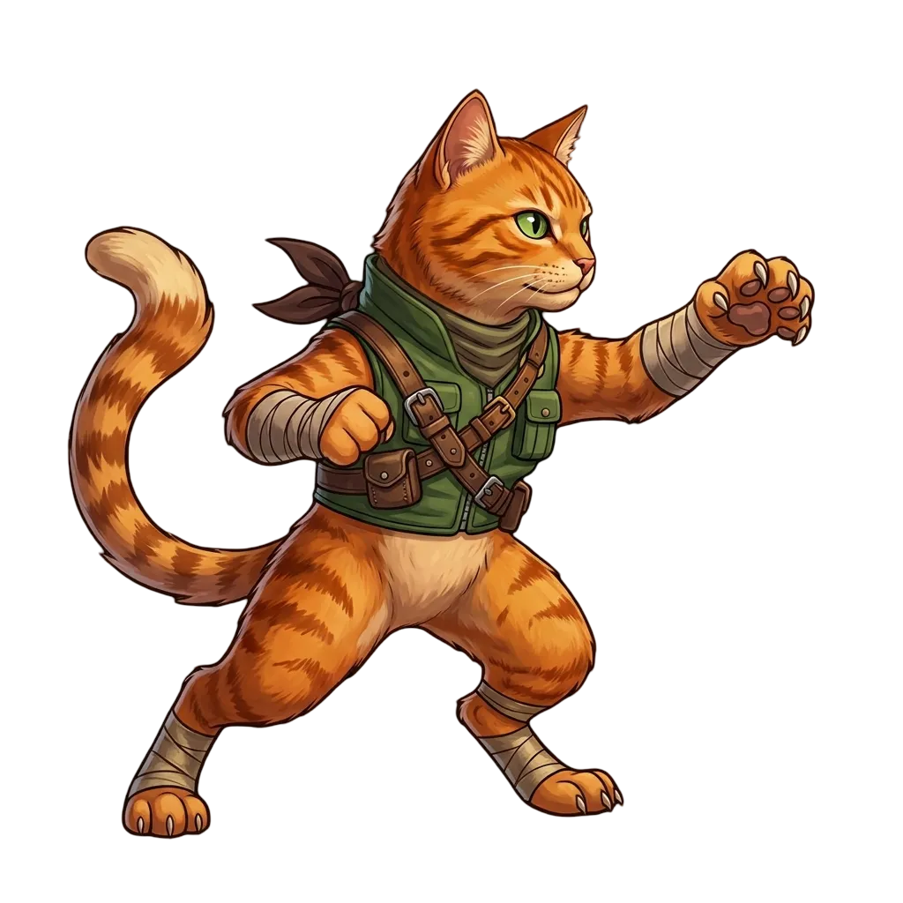

Сражайся
Атакуй нажатием или развивай автоатаку. Усиливай когти, броню и другие навыки, чтобы справляться с новыми противниками.
Android · Кликер · RPG
Путь к Королю
У каждого великого кота когда-то был обычный двор. Выбери героя, побеждай противников и пройди путь до Кошачьего Короля — один бой за другим.
Открыть в RuStoreБесплатно · Есть реклама · Для Android

Твой путь
Атакуй нажатием или развивай автоатаку. Усиливай когти, броню и другие навыки, чтобы справляться с новыми противниками.
Открывай котов, выполняй задания и улучшай постройки. Домик рыбака приносит рыбок, пока ты отдыхаешь.
Открывай локации на карте пути. А когда будешь готов — переродись и начни новое путешествие с бонусами.
Внутри игры
Перед приключением
Игра доступна для Android в RuStore ↗. Ссылка на этой странице ведёт к официальной карточке игры.
Нет. Можно начать играть сразу. Прогресс сохраняется на устройстве.
Основная игра работает без интернета. Подключение необходимо для загрузки рекламы с вознаграждением.
Напиши на merdarion45ru@yandex.ru. Укажи модель телефона и опиши, что произошло. Скриншот или видео помогут разобраться быстрее.
Помочь игре стать лучше
Нашёл ошибку или придумал, чего не хватает котам? Напиши разработчику и расскажи о своей идее.